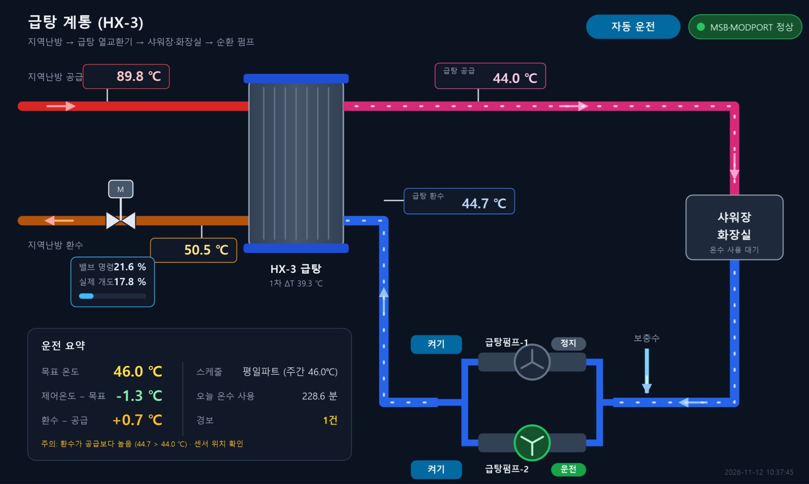
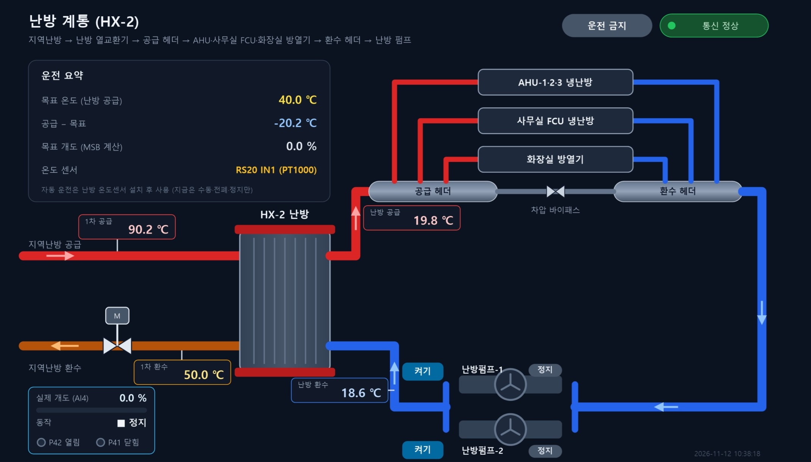
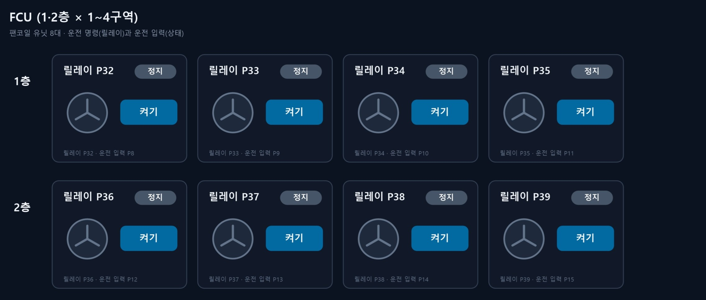

에너지 · 자동제어
테니스장 급탕·난방 자동제어 프로그램 구축
테니스장의 기존 외산 전용 자동제어의 급탕(HX-3)·난방(HX-2)·팬코일(FCU) 제어를 범용 컨트롤러와 자체 프로그램으로 바꿨습니다. 업체 지원 없이도 모든 운전 데이터를 10초마다 직접 기록·분석할 수 있게 됐고, 급탕은 2026년 11월 4일부터 새 시스템으로 자동 운전 중입니다.




- 급탕 자동 운전 전환 · 안정 운영 중
- 11월 4일 전환 후 상시 자동 운전 중입니다. 급탕 온도는 ±0.3℃ 안에서 유지되고, 밸브는 명령을 10~20초 안에 따라갑니다. 평일·주말·행사 스케줄은 기존과 같습니다.
- 멈추지 않는 제어 구조
- 온도 제어는 현장 컨트롤러가 직접 하므로 서버나 네트워크가 끊겨도 계속됩니다. 관제 서버는 현장 서버와 사무실 PC가 주·서브로 동작해 한쪽이 멈추면 다른 쪽이 이어받습니다.
- 에너지 · 운전 데이터 수집 (ESG 기반)
- 급탕·난방·지역난방의 공급·환수 온도, 밸브 명령과 실제 개도, 펌프 상태, FCU 8대 가동 상태를 실시간 기록합니다. 쌓인 데이터는 AI로 분석해 에너지 운전 조건을 최적화할 계획입니다.
- 데이터로 처음 확인한 설비 상태
- 밸브를 연 뒤 공급 온도 반응까지 약 1분, 배관 순환에 약 2분이 걸립니다. 급탕 열교환기 효율은 평균 약 86%로 양호하며, 배관 열손실 추정값은 보온 보수 등 절감 대상을 고르는 근거로 씁니다(열량계로 검증 중).
- 고장 원인을 내부에서 바로 추적
- 11월 8일 새벽 급탕 온도센서 고장을 운전 기록으로 분석해 원인을 찾았습니다. 대체 센서 자동 전환, 이상값 무시, 경보음 알림을 개선 항목으로 설계했습니다.
- 유지보수 자립 · 저비용 구축
- 제어 프로그램과 관제 화면 소스코드를 직접 보유해 AI의 도움으로 바로 수정·개선합니다. 컨트롤러 구입비는 50만 원 미만이며, 장비 유형별 표준으로 만들어 다른 시설에도 같은 방식으로 적용할 수 있습니다.
- 운영 도우미 챗봇
- 운전 기록으로 질문에 답하고 매일 07:00 일일·주간 운전 일지를 자동으로 씁니다. 사내 로컬 LLM(DGX Spark)을 써서 기록이 외부로 나가지 않으며, 이상 판단은 프로그램이, 설명은 AI가 맡습니다. 자세한 내용은 운영 도우미 챗봇에서 볼 수 있습니다.
- 앞으로의 계획
- 이번 겨울 AI 운영 일지 · 난방 분석 그래프 · 외기·실내 온도 측정
2027년 정상 운전 범위 학습 · 에너지 최적 운전 제안 · 냉수순환·저수조·고가수조 연동


